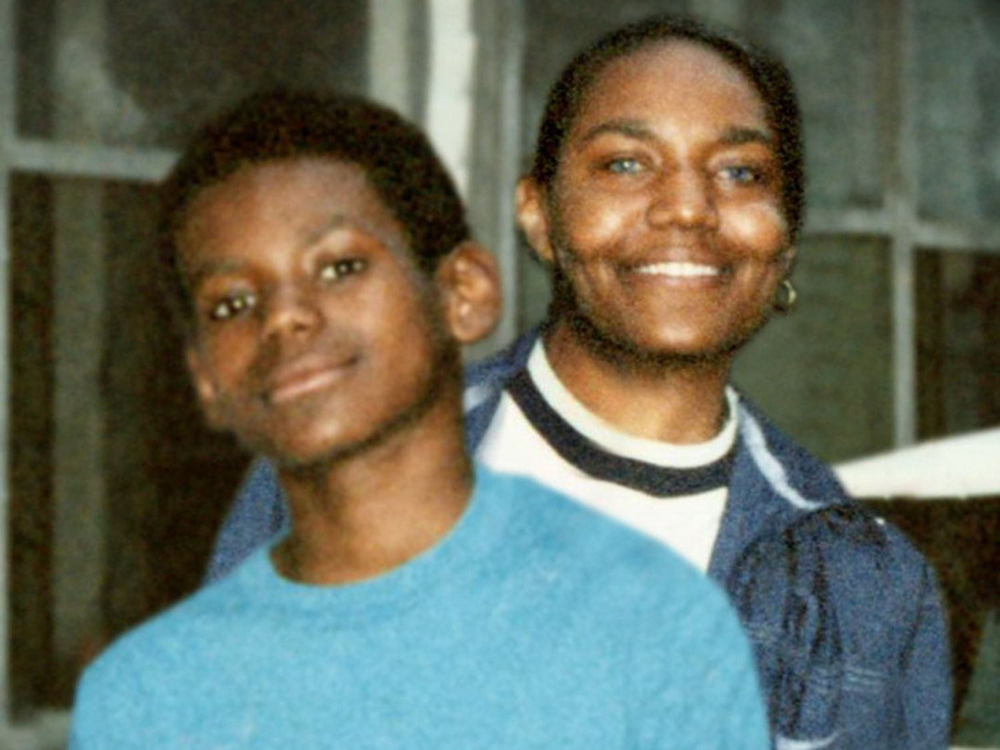
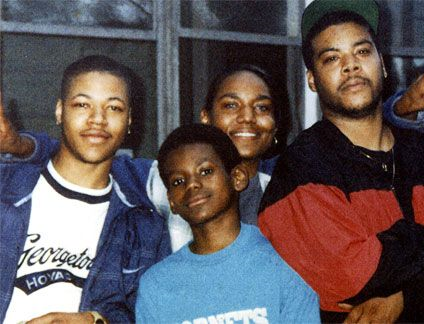
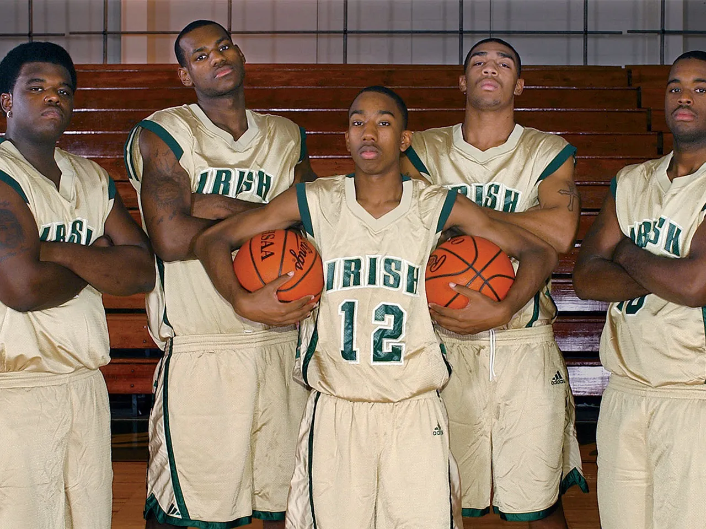
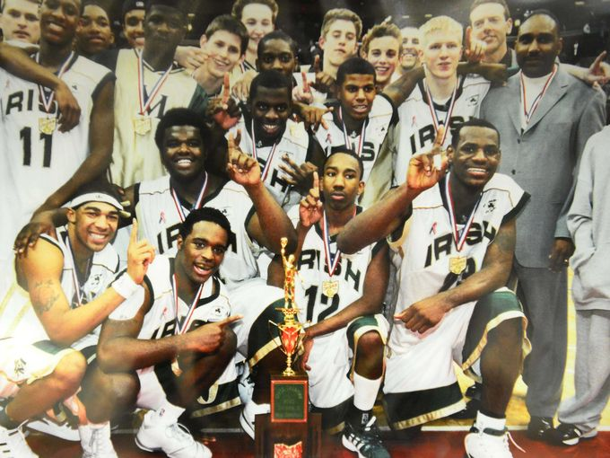
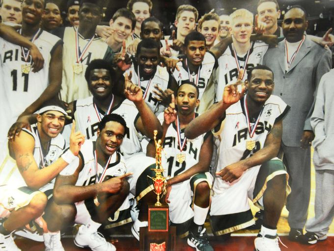

LeBron James nació el 30 de diciembre de 1984 en Akron, Ohio.

En ese momento, su madre tenía tan solo 16 años lo cual estuvo obligado a vivir con su abuela hasta los tres años, cuando su abuela falleció debido a un paro cardíaco. Desde entonces, tuvo una infancia difícil en la pobreza extrema, mudándose varias veces de vivienda y faltando con frecuencia a la escuela. Pasaba la mayor parte del día viendo televisión con su madre, ya que no tenía adultos estables en su vida en quienes apoyarse.

Cuando aparecio el entrenador de fútbol americano juvenil de la escuela primaria, Frank Walker quien extendió una mano de ayuda. Le consiguió un empleo a su madre y se comprometió a cuidar de ellos hasta que pudieran establecerse por sí mismos.

Ya sintiendo el cariño y amor de su nueva familia, Lebron mostró un gran talento para el basketball. Formando un equipo con sus amigos llego a la final del torneo local.

Se destacó en la escuela secundaria St. Vincent-St. Mary en Akron, donde jugó al baloncesto a un nivel sobresaliente.
 

Durante su último año en la escuela secundaria, LeBron se convirtió en una sensación del baloncesto a nivel nacional, promediando más de 30 puntos por juego.

En el Draft de la NBA de 2003, los Cleveland Cavaliers seleccionaron a LeBron James con la primera selección general. Y el resto es historia...